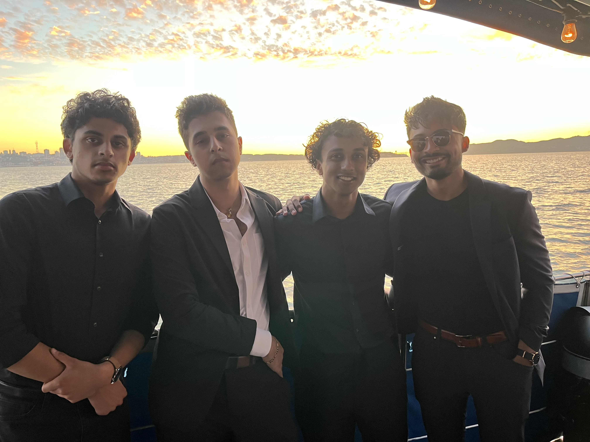
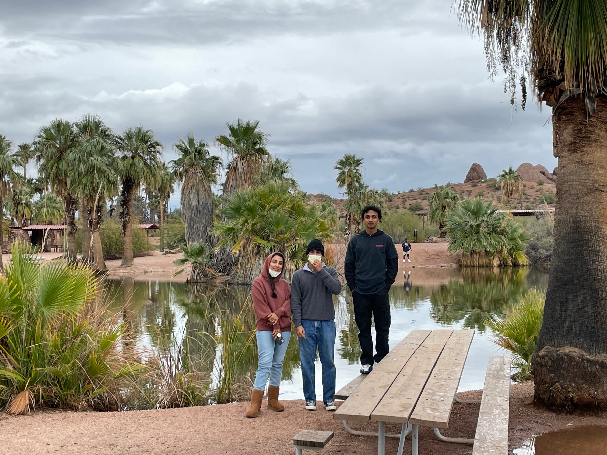
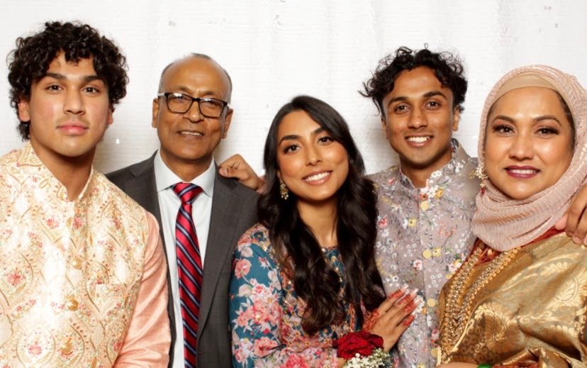
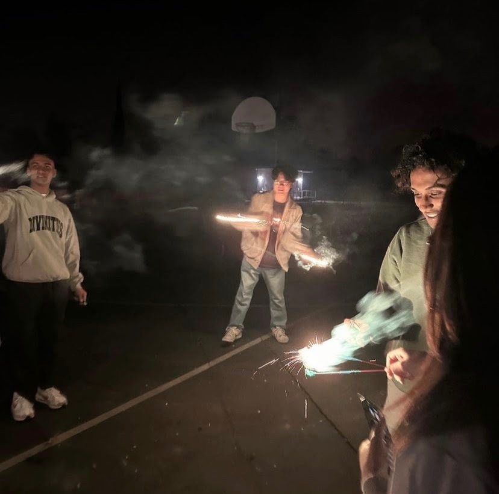
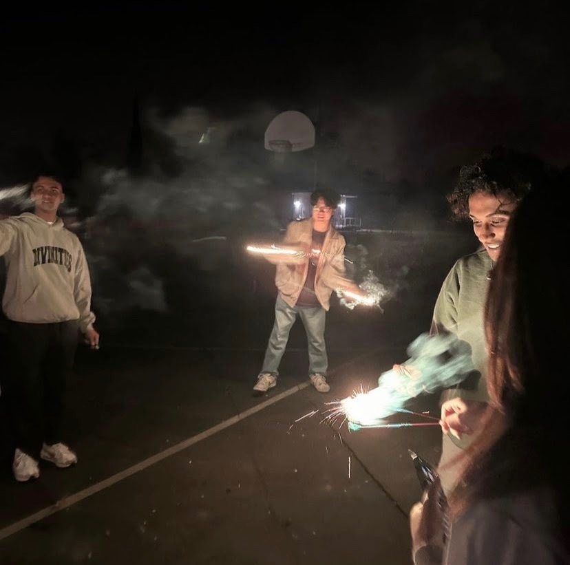
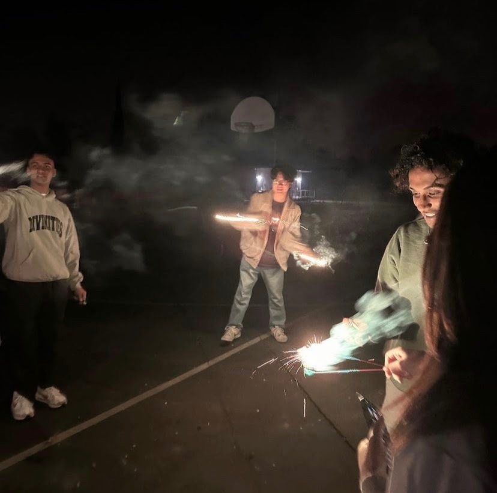

About Me
• I am a junior studying Computer Science and Materials Science & Engineering at UC Berkeley.
• Currently, I'm a ML Research Intern in Berkeley’s EECS lab, working on computational materials science under Salahuddin Group.
• I have previous experience at Socialtrait, a Bay Area AI startup, as a Software Engineer Intern.
• Outside of tinkering with code and machines, in my free time, I enjoy spending time with friends and family, playing basketball, working on cars, and cooking new foods (my go-to is Tomato Basil Penne Pasta).



 


